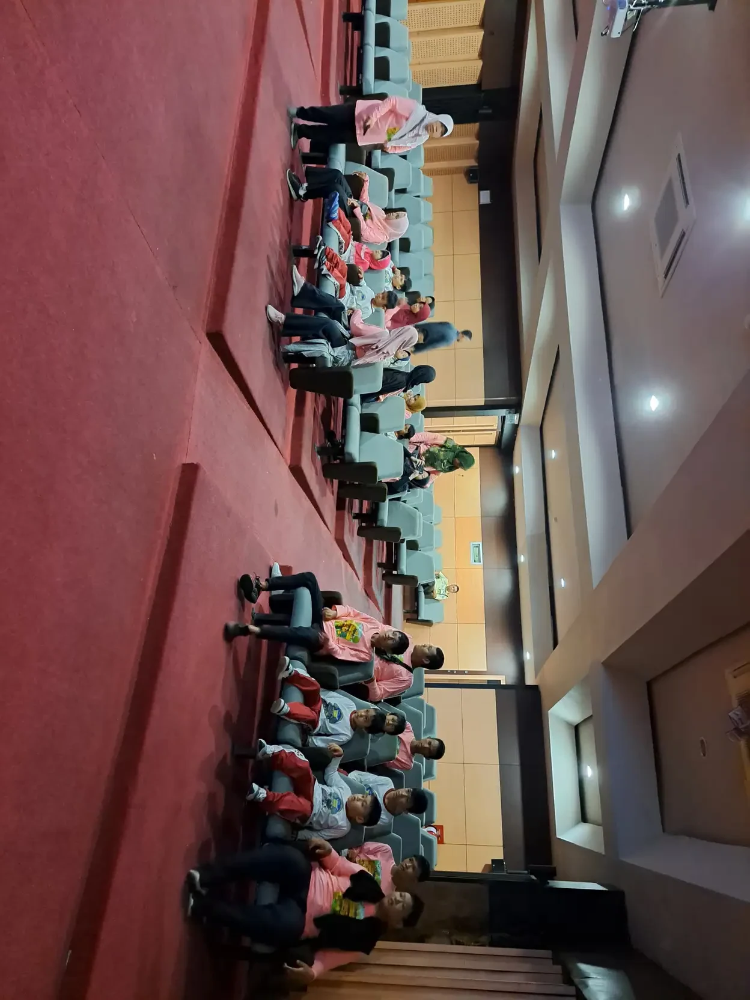
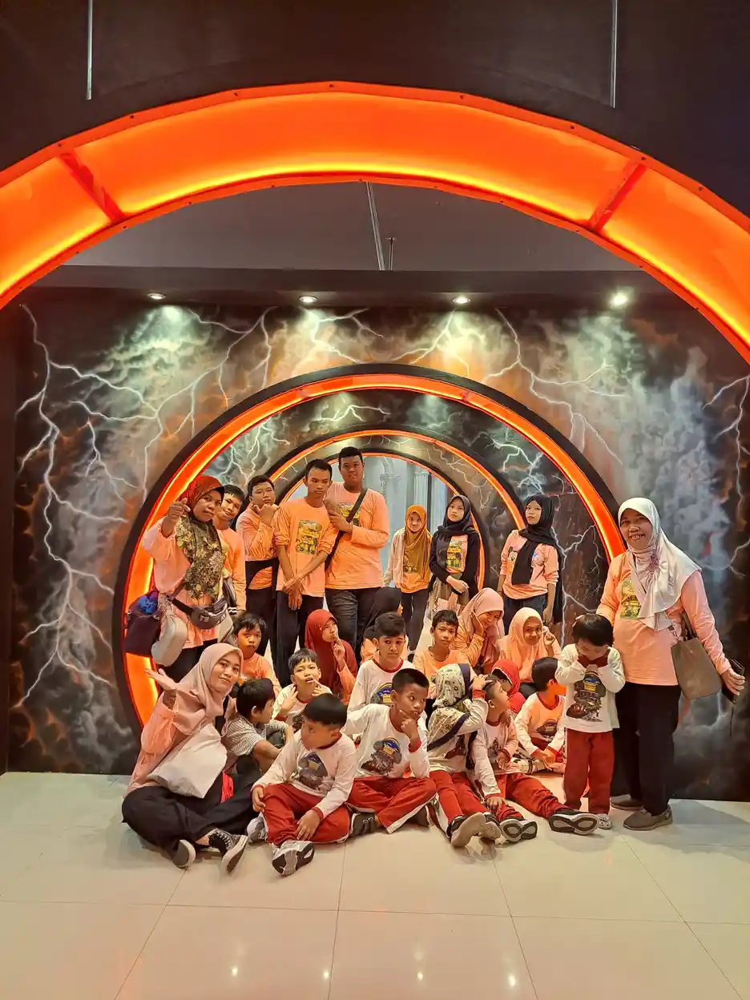

Bagaimana cara menyalurkan donasi? Tentukan tujuan bantuan, verifikasi pengelola dan kebutuhan penerima, gunakan kanal resmi, periksa tujuan transfer, lalu simpan bukti serta minta konfirmasi. Sesudahnya, pantau pertanggungjawaban sesuai kesepakatan sambil melindungi data donatur dan martabat penerima. Jangan terburu-buru membayar hanya karena sebuah unggahan terasa mendesak.
Panduan ini membantu Anda mengambil keputusan sebagai donatur, bukan menawarkan paket kampanye. Fokusnya adalah pemeriksaan sebelum membayar dan tindak lanjut setelah bantuan diterima. Informasi rekening maupun metode pembayaran YUKA harus diperiksa langsung pada halaman resmi, bukan disalin dari artikel atau pesan yang tidak jelas asalnya.
Daftar Isi
- Apa yang perlu ditentukan sebelum memilih penerima donasi?
- Bagaimana memverifikasi lembaga tanpa hanya percaya unggahan?
- Bagaimana memastikan bantuan sesuai kebutuhan penerima?
- Lebih tepat menyalurkan uang, barang, atau dukungan keterampilan?
- Bagaimana memilih kanal pembayaran yang aman?
- Apa yang harus diperiksa tepat sebelum menekan tombol bayar?
- Bagaimana menyimpan bukti dan meminta tanda terima?
- Bagaimana menilai laporan tanpa menuntut hasil instan?
- Bagaimana menjaga privasi donatur dan martabat penerima?
- Apa yang dilakukan jika muncul tanda penipuan atau ketidaksesuaian?
- Bagaimana memulai donasi ke YUKA dengan keputusan yang tenang?
- Pertanyaan umum tentang penyaluran donasi
Apa yang perlu ditentukan sebelum memilih penerima donasi?
Mulailah dengan kebutuhan yang ingin Anda dukung, bukan dengan cara pembayaran. Donasi untuk bahan belajar, kebutuhan pangan, pendampingan keluarga, atau pemulihan setelah bencana memerlukan pengelola dan proses yang berbeda. Tuliskan tujuan sederhana agar pilihan lembaga tidak hanya mengikuti unggahan paling menyentuh yang muncul di layar Anda hari ini.
Tanyakan kepada diri sendiri apakah bantuan ditujukan kepada seseorang, kegiatan tertentu, atau kebutuhan lembaga secara umum. Jika ingin mendukung pendidikan, pelajari dahulu arti pendidikan inklusi. Dukungan yang tepat mempertimbangkan akses belajar dan partisipasi, bukan sekadar memberikan barang yang menurut donatur menarik. Penerima mempunyai kebutuhan dan pilihan yang layak didengar.
Sesuaikan komitmen dengan keadaan keuangan pribadi. Sumbangan sebaiknya tidak mengorbankan kebutuhan pokok atau dibuat karena takut dinilai kurang peduli. Anda boleh menunda, mengurangi rencana bantuan, atau berdiskusi lebih dahulu. Keputusan yang tenang juga membantu Anda memilih bentuk kontribusi yang dapat dipertanggungjawabkan kepada keluarga atau anggota komunitas.
Untuk mengenal konteks YUKA, lihat program pendidikan dan pendampingan, lalu bedakan kegiatan yang sedang dijalankan dengan rencana pengembangan. Jangan menganggap semua rencana sudah menjadi layanan aktif. Pertanyaan awal yang berguna ialah, “Kebutuhan apa yang sedang menjadi prioritas, dan dukungan seperti apa yang saat ini dapat diterima?”
Bagaimana memverifikasi lembaga tanpa hanya percaya unggahan?
Periksa nama pengelola, alamat, penanggung jawab, kegiatan, dan kanal komunikasi secara bersama. Satu logo atau foto acara belum cukup. Buka situs resmi melalui alamat yang Anda cari sendiri, kemudian cocokkan informasi di halaman profil, program, dan kontak. Perbedaan informasi merupakan alasan untuk bertanya sebelum mengirimkan uang.
Pada profil Yayasan Ukhuwah Kaffah Amanatullah, YUKA menampilkan identitas badan hukum, pengurus, alamat, dan informasi legalitas. Gunakan halaman itu sebagai titik awal pemeriksaan, bukan sebagai pengganti semua pemeriksaan lain. Status badan hukum menjawab soal identitas organisasi; status tersebut tidak otomatis membuktikan hasil sebuah kegiatan atau kewenangan orang yang menghubungi Anda.
Jika penggalang dana mengatasnamakan lembaga, tanyakan hubungannya dengan lembaga tersebut dan lakukan konfirmasi melalui kontak resmi YUKA, bukan hanya nomor dalam pesan berantai. Mintalah penjelasan singkat mengenai tujuan penggalangan, pihak yang menerima dana, serta bagaimana pencatatannya. Ketika jawabannya belum jelas, Anda tidak perlu merasa bersalah untuk berhenti sementara.
Panduan pemeriksaan amal FTC menyarankan meneliti lembaga, memahami penggunaan sumbangan, dan tidak menyerah pada tekanan. Prinsip kewaspadaan ini berguna, tetapi ketentuan registrasi dan pajak Amerika Serikat dalam sumber tersebut tidak diterapkan sebagai aturan Indonesia dalam artikel ini. Baca informasi yang relevan dengan konteks Anda.

Bagaimana memastikan bantuan sesuai kebutuhan penerima?
Cocokkan tujuan Anda dengan kebutuhan yang dapat dijelaskan pengelola. Pilihan donasi tidak harus menjadi ajang menentukan siapa yang paling layak dikasihani. Pertanyaan yang lebih berguna ialah kegiatan apa yang membutuhkan dukungan, siapa yang mengoordinasikannya, dan apakah bentuk bantuan Anda dapat digunakan tanpa menambah beban pengelolaan.
Jika tertarik pada dukungan pendidikan ABK, tanyakan apakah prioritas saat ini berkaitan dengan perlengkapan belajar, pendampingan, fasilitas, atau kegiatan keterampilan. Jangan mengasumsikan satu barang cocok untuk semua peserta. Dalam pendidikan inklusi, cara memakai alat dan dukungan lingkungan sering sama pentingnya dengan memiliki alat itu sendiri.
Untuk dukungan yang diarahkan khusus, jelaskan maksud Anda sebelum transaksi. Misalnya, Anda ingin membantu pengadaan bahan belajar dan meminta penggunaan di luar tujuan tersebut dibicarakan terlebih dahulu. Pengelola mungkin menawarkan dukungan umum karena kebutuhan berubah. Pilihan itu perlu dipahami kedua pihak; jangan menafsirkan percakapan yang belum disepakati sebagai janji alokasi pasti.
Anda juga dapat membaca konteks Sekolah Inklusi Taruna Imani di Sleman untuk memahami lingkungan kegiatan. Artikel ini tidak menjanjikan bahwa nominal tertentu menghasilkan kemampuan tertentu pada anak. Perjalanan belajar dipengaruhi banyak hal, sehingga hasil tidak selayaknya dipakai sebagai jaminan pemasaran donasi.
Lebih tepat menyalurkan uang, barang, atau dukungan keterampilan?
Pilih bentuk bantuan setelah mengetahui kebutuhan dan kapasitas penerima. Uang memungkinkan pengadaan yang terkoordinasi, barang cocok jika spesifikasinya sudah disepakati, dan keterampilan berguna jika tersedia ruang kolaborasi yang aman. Tidak ada bentuk yang otomatis paling baik. Kesesuaian dan pencatatan lebih penting daripada kesan besar saat penyerahan.
| Bentuk dukungan | Pemeriksaan sebelum menyalurkan | Catatan tindak lanjut |
|---|---|---|
| Dana | Kanal resmi, tujuan penggunaan, identitas penerima, dan rincian biaya jika ada | Simpan transaksi dan minta konfirmasi pencatatan |
| Barang | Kebutuhan aktual, kondisi, spesifikasi, tempat penyimpanan, dan koordinasi pengiriman | Catat barang yang diterima serta kebutuhan penjelasan penggunaannya |
| Waktu atau keterampilan | Kesesuaian peran, kapasitas pendampingan, batas interaksi, dan izin kegiatan | Sepakati tugas, penanggung jawab, serta evaluasi kerja sama |
Halaman kontak YUKA menyebut penerimaan donasi barang dengan koordinasi terlebih dahulu. Maka, jangan langsung mengirim pakaian bekas, alat elektronik, atau perlengkapan lain tanpa menanyakan kebutuhan. Barang yang rusak, sulit dirawat, atau tidak sesuai ruang yang tersedia dapat membuat penerima harus mengeluarkan waktu dan biaya tambahan. Beri pilihan untuk menolak secara nyaman.
Untuk kontribusi perusahaan atau komunitas, pelajari jalur kemitraan CSR pendidikan inklusi. Diskusikan tujuan, bentuk dukungan, dan laporan sebelum membuat pengumuman. Jangan mencantumkan logo lembaga atau foto peserta sebagai dukungan resmi terhadap perusahaan tanpa persetujuan. Kesepakatan komunikasi perlu dipisahkan dari keputusan memberikan bantuan.

Bagaimana memilih kanal pembayaran yang aman?
Gunakan informasi pembayaran dari kanal resmi yang Anda buka secara mandiri. Periksa alamat situs dengan teliti, lalu cocokkan nama penerima yang muncul di aplikasi pembayaran. Jika identitas tidak sesuai, rincian berubah mendadak, atau petugas meminta tindakan yang tidak wajar, berhenti dan konfirmasikan sebelum menyelesaikan transaksi tersebut.
Untuk YUKA, rujukan pembayaran adalah halaman donasi resmi. Artikel ini sengaja tidak menyalin nomor rekening, kode pembayaran, maupun gambar QRIS agar pembaca tidak memakai salinan yang mungkin kedaluwarsa. Jika informasi pada halaman itu tidak terlihat atau belum cukup jelas, hubungi kontak resmi. Jangan mengisi kekosongan dengan rekening dari komentar atau tangkapan layar lama.
Apabila suatu kanal resmi menawarkan pembayaran dengan kode QR, baca identitas penerima yang ditampilkan aplikasi sebelum menyetujui. Saran ini bersifat umum dan bukan pernyataan bahwa YUKA menyediakan QRIS. Demikian pula, biaya transfer, biaya platform, serta pilihan pembayaran perlu diperiksa pada layanan yang benar-benar Anda gunakan. Tidak ada tarif yang diasumsikan dalam panduan ini.
Jangan memberikan PIN, kata sandi, atau kode autentikasi kepada orang yang mengaku membantu donasi. Pengelola tidak perlu masuk ke akun perbankan Anda untuk menerima sumbangan. Ikon gembok dan alamat HTTPS membantu perlindungan koneksi, tetapi menurut panduan FTC tidak membuktikan bahwa pengelola situs sah. Perhatikan identitas dan tujuan, bukan tampilan situs saja.
Apa yang harus diperiksa tepat sebelum menekan tombol bayar?
Periksa kembali penerima, nominal, tujuan bantuan, dan status pembayaran sebelum menekan konfirmasi. Lakukan transaksi pada aplikasi yang Anda kenal, tanpa diarahkan untuk memasang berkas dari percakapan. Bila ada instruksi berbeda dari kesepakatan awal, selesaikan perbedaan itu terlebih dahulu. Anda berhak mengambil jeda untuk memeriksa.
Catat apakah bantuan diberikan sekali atau berulang. Jangan mengaktifkan pembayaran rutin hanya karena pilihan tersebut sudah tercentang. Baca ketentuan penghentian komitmen dan siapa yang dapat dihubungi jika terjadi kesalahan. Komitmen berkelanjutan boleh menjadi pilihan, tetapi persetujuannya perlu sadar dan sesuai kemampuan, bukan terselip dalam proses pembayaran yang terburu-buru.
Untuk transfer melalui aplikasi bank, perhatikan layar hasil transaksi. Status tertunda tidak sama dengan berhasil. Jika aplikasi macet, periksa riwayat sebelum mencoba lagi agar tidak mengirim dua kali. Jangan mengirim bukti yang diedit untuk menampilkan status berhasil. Pengelola perlu memeriksa penerimaan dana berdasarkan catatannya sendiri, bukan gambar yang tampak meyakinkan.
Jika donasi berasal dari patungan, tentukan siapa yang menyimpan bukti dan siapa yang berkomunikasi dengan penerima. Sebelum menyerahkan dana, sampaikan tujuan, pengeluaran terkait bila ada, serta saldo yang belum tersalurkan kepada anggota. Pengumpulan uang dari orang lain membawa kebutuhan pertanggungjawaban praktis. Panduan ini tidak menetapkan ketentuan hukum penggalangan dana; tanyakan aturan yang relevan kepada instansi berwenang.
Bagaimana menyimpan bukti dan meminta tanda terima?
Simpan bukti pembayaran asli, kemudian minta konfirmasi bahwa bantuan sudah diterima dan dicatat. Bukti transfer menjelaskan transaksi pada penyedia pembayaran, sedangkan konfirmasi lembaga menjelaskan penerimaan pada pihak tujuan. Keduanya mempunyai fungsi berbeda. Jangan menganggap satu tangkapan layar sebagai laporan lengkap penggunaan sumbangan setelah kegiatan berjalan.
Kirim informasi secukupnya melalui kanal yang sudah diverifikasi: nama atau sebutan donatur, waktu transaksi, nominal, tujuan, serta referensi yang dibutuhkan untuk pencocokan. Sebelum membagikan gambar, tutup saldo dan informasi transaksi lain yang tidak relevan. Tanyakan apakah format bukti itu cukup. Tidak perlu mengirim identitas lengkap jika tidak ada penjelasan kebutuhan yang masuk akal.
Minta petugas menjelaskan bentuk konfirmasi yang dapat diberikan. Bisa berupa balasan penerimaan, catatan barang yang diterima, atau dokumen sesuai prosedur lembaga. Artikel ini tidak menjanjikan tanda terima dengan format tertentu ataupun batas waktu balasan YUKA. Untuk kebutuhan administrasi perusahaan, jelaskan permintaan dokumen sebelum transfer agar pengelola dapat menilai apakah dapat memenuhinya.
Jika belum ada konfirmasi, rujuk transaksi yang sama saat menindaklanjuti. Jangan langsung membuat donasi pengganti. Percakapan yang tertata membantu kedua pihak menelusuri kesalahan tanggal, referensi, atau tujuan. Simpan jawaban resmi bersama bukti pembayaran dalam folder pribadi yang aksesnya terbatas, bukan dalam unggahan terbuka untuk membuktikan kebaikan Anda kepada publik.

Bagaimana menilai laporan tanpa menuntut hasil instan?
Mintalah pertanggungjawaban yang menghubungkan dukungan, kegiatan, dan penggunaan secara masuk akal. Laporan tidak harus berupa kumpulan foto penerima memegang bantuan. Ringkasan pengeluaran, catatan pengadaan, penjelasan kegiatan yang belum berjalan, serta kendala pelaksanaan dapat lebih berguna. Sepakati cakupan informasi dan waktu pembaruan sebelum menilai apakah tindak lanjut sudah memadai.
Bedakan penerimaan dana, penggunaan dana, pelaksanaan kegiatan, dan perubahan jangka panjang. Keempatnya bukan hal yang sama. Foto acara mungkin menunjukkan bahwa suatu kegiatan pernah berlangsung, tetapi tidak otomatis membuktikan dana Anda digunakan untuk acara itu. Galeri kegiatan YUKA memberi konteks visual, bukan audit transaksi donatur atau bukti hasil individual.
Penjelasan Kitabisa tentang donasi yang belum dicairkan menunjukkan bahwa dana terkumpul dan penyaluran merupakan tahapan berbeda. Itu adalah kebijakan platform tersebut, bukan kebijakan YUKA. Pelajaran bagi donatur ialah bertanya mengenai proses, bukan menyimpulkan semuanya selesai ketika tombol pembayaran menunjukkan keberhasilan.
Jika laporan berbeda dari tujuan yang disepakati, tanyakan alasannya secara tertulis. Minta penjelasan tentang perubahan kebutuhan, dana yang belum digunakan, dan pilihan tindak lanjut. Donatur tidak harus menyetujui perubahan tanpa memahami, tetapi juga tidak perlu langsung menuduh. Penjelasan yang jujur mengenai keterbatasan sering lebih bernilai daripada janji bahwa setiap bantuan selalu segera menghasilkan perubahan besar.
Bagaimana menjaga privasi donatur dan martabat penerima?
Pisahkan kebutuhan pencatatan dari kebutuhan publikasi. Donatur dapat meminta nama dan nominal tidak diumumkan, sementara lembaga mungkin tetap memerlukan informasi terbatas untuk mencocokkan penerimaan. Pada sisi penerima, hindari meminta data kesehatan, alamat rumah, atau gambar pribadi sebagai syarat bantuan. Transparansi dapat berjalan tanpa membuka kehidupan seseorang kepada publik.
Jika ingin anonim, jelaskan apa yang Anda maksud: nama tidak ditulis pada unggahan, nominal tidak disebutkan, atau kontak tidak digunakan untuk ajakan berikutnya. Tanyakan cara lembaga mengelola permintaan itu. Anonim dalam komunikasi publik berbeda dari tidak adanya jejak transaksi pada bank. Jangan menjanjikan kepada anggota patungan bahwa seluruh data mereka pasti tidak tercatat di mana pun.
Dalam konteks yayasan pendamping ABK di Yogyakarta, anak bukan objek pembuktian untuk kepuasan donatur. Anda dapat meminta ringkasan kegiatan tanpa menuntut anak berpose, menceritakan pengalaman pribadi, atau memperlihatkan dokumen. Semua foto dalam panduan ini hanyalah dokumentasi kegiatan YUKA dan tidak mengidentifikasi peserta sebagai penerima bantuan tertentu.
Untuk publikasi kunjungan, bicarakan izin dan batas pengambilan gambar dengan pengelola. Kehadiran seseorang dalam kegiatan tidak otomatis berarti ia mengizinkan fotonya dipakai sebagai materi kampanye baru. Utamakan cerita tentang akses, proses, dan kerja bersama. Pembaca yang ingin mendalami prinsip penulisan dapat melihat kebijakan editorial YUKA.

Apa yang dilakukan jika muncul tanda penipuan atau ketidaksesuaian?
Hentikan transaksi tambahan ketika ada permintaan yang tidak wajar. Tanda yang perlu diperiksa antara lain desakan membayar segera, perubahan penerima tanpa penjelasan, permintaan kode autentikasi, atau tuntutan biaya tambahan untuk membuka bukti donasi. Periksa melalui kanal resmi secara terpisah. Jangan menyelesaikan keraguan dengan mengikuti instruksi baru dari pihak yang sama.
Jika hanya ada keterlambatan konfirmasi, mulailah dari pemeriksaan transaksi dan komunikasi dengan lembaga. Keterlambatan bukan otomatis penipuan. Sebaliknya, ketika muncul dugaan penipuan keuangan, segera hubungi bank atau penyedia pembayaran Anda melalui kanal resminya. Simpan bukti transfer, percakapan, alamat situs, serta urutan kejadian agar penanganan tidak bergantung pada ingatan setelah Anda panik.
Portal IASC OJK menjelaskan jalur pelaporan penipuan transaksi keuangan dan menyarankan pelaporan kepada kepolisian. Ikuti petunjuk terbaru di portal resmi itu. Artikel ini tidak menjanjikan pemblokiran, pengembalian dana, atau waktu penyelesaian. Jangan membayar orang yang menjamin uang kembali dan jangan mengirim data laporan ke akun yang tidak terverifikasi.
Setelah situasi diperiksa, catat pelajaran praktis untuk donasi berikutnya: kanal yang dibuka, titik yang menimbulkan keraguan, dan bukti yang sempat disimpan. Hindari menyebarluaskan dokumen penerima atau data anak ketika menceritakan pengalaman. Jika ingin mengoreksi informasi di artikel YUKA, gunakan kanal resmi, bukan menempelkan data sensitif pada kolom komentar publik.
Bagaimana memulai donasi ke YUKA dengan keputusan yang tenang?
Mulai dari profil dan program, sampaikan tujuan bantuan, lalu konfirmasikan kanal pembayaran terbaru. Setelah berdonasi, simpan bukti dan tindak lanjuti pencatatan secara wajar. Alur ini membantu Anda mengambil keputusan tanpa perlu memaksa diri memahami semua hal sekaligus. Jika belum siap mentransfer, pertanyaan yang jelas sudah merupakan langkah awal yang berguna.
Anda dapat mengirim pesan seperti ini: “Saya ingin mendukung kegiatan pendidikan. Mohon informasi kebutuhan yang sedang diprioritaskan, bentuk dukungan yang sesuai, kanal pembayaran resmi, dan cara konfirmasi penerimaan. Saya juga ingin mengetahui bagaimana pembaruan penggunaan bantuan dapat diminta serta apakah nama donatur dapat tidak dipublikasikan.” Pesan ini adalah contoh, bukan prosedur wajib YUKA.
Jika tujuan Anda berkaitan dengan zakat, baca informasi zakat pendidikan ABK dan tanyakan pengelolaan serta kesesuaian tujuan secara khusus. Jangan menganggap sedekah umum, zakat, dan bantuan perusahaan mempunyai ketentuan yang selalu sama. Panduan ini juga tidak menyatakan donasi otomatis dapat mengurangi pajak. Kebutuhan hukum, perpajakan, atau keagamaan yang khusus perlu penjelasan dari pihak yang kompeten.
Untuk melangkah sekarang, buka halaman donasi resmi YUKA atau diskusikan kebutuhan dengan tim YUKA. Pilih bantuan yang sesuai, beri ruang bagi penerima untuk menyampaikan kebutuhan, dan pertahankan pencatatan yang jelas. Menyalurkan donasi dengan aman bukan hanya memastikan uang berpindah, melainkan menjaga kepercayaan dan martabat sepanjang prosesnya.
Pertanyaan Umum tentang Penyaluran Donasi
Bagaimana cara menyalurkan donasi dengan aman?
Tentukan tujuan bantuan, periksa identitas pengelola dan programnya, lalu buka kanal resmi secara mandiri. Cocokkan penerima sebelum membayar, simpan bukti transaksi, dan minta konfirmasi penerimaan. Tunda transfer jika informasi bertentangan atau Anda didesak membayar sebelum sempat memeriksa.
Bagaimana memeriksa rekening donasi YUKA yang benar?
Buka halaman donasi resmi YUKA dan gunakan informasi terbaru yang tersedia di sana. Jika rincian pembayaran tidak terlihat, berbeda, atau meragukan, tanyakan melalui kontak resmi YUKA sebelum transfer. Artikel ini tidak menyalin nomor rekening dan tidak menetapkan metode pembayaran yang belum dikonfirmasi.
Apakah donasi barang selalu lebih baik daripada uang?
Tidak selalu. Barang berguna jika jenis, kondisi, jumlah, dan waktu penerimaannya sesuai kebutuhan pengelola. Hubungi lembaga sebelum mengirim. Dana juga dapat sesuai ketika kebutuhan berubah atau pengadaan perlu dikoordinasikan, tetapi arah penggunaan dan pencatatannya tetap perlu dibicarakan.
Apa yang dilakukan jika transfer berhasil tetapi belum dikonfirmasi?
Periksa status transaksi di aplikasi pembayaran, simpan referensinya, lalu hubungi kanal resmi penerima dengan bukti yang relevan. Jangan langsung mengulang transfer. Minta petugas memeriksa pencatatan dan menjelaskan tindak lanjut; waktu respons perlu disepakati, bukan diasumsikan dari artikel ini.
Apakah foto kegiatan membuktikan donasi saya sudah disalurkan?
Tidak. Foto dapat memberi konteks kegiatan, tetapi tidak dengan sendirinya membuktikan hubungan antara transaksi Anda, penggunaan dana, dan penerima manfaat. Mintalah ringkasan pencatatan atau laporan yang sesuai kesepakatan, tanpa meminta identitas pribadi anak maupun dokumentasi yang merendahkan mereka.
Bolehkah donatur meminta namanya tidak dipublikasikan?
Donatur dapat menyampaikan preferensi agar nama, nominal, dan bukti transfer tidak dipublikasikan. Tanyakan bagaimana lembaga mencatat donasi anonim dan siapa yang dapat mengakses data konfirmasi. Anonim dalam publikasi tidak berarti transaksi tidak memiliki catatan pada penyedia pembayaran.
Apa yang harus dilakukan jika diduga tertipu saat berdonasi?
Hentikan pembayaran tambahan dan segera hubungi bank atau penyedia pembayaran melalui kanal resminya. Simpan bukti transaksi, percakapan, dan alamat situs. Ikuti petunjuk pelaporan pada portal resmi IASC OJK serta kepolisian. Pelaporan tidak menjamin dana kembali; jangan membayar jasa pemulihan yang tidak terverifikasi.
Bacaan Terkait
Sumber dan Referensi
- FTC: Before Giving to a Charity, prinsip pemeriksaan dan keamanan, bukan aturan hukum Indonesia
- IASC OJK: panduan pelaporan penipuan transaksi keuangan
- Kitabisa: penjelasan dana terkumpul dan penyaluran, kebijakan khusus platform
- YUKA: halaman donasi resmi untuk informasi pembayaran terbaru
- YUKA: program pendidikan dan pendampingan
- YUKA: identitas, pengurus, dan legalitas
- YUKA: kontak resmi dan koordinasi donasi barang
Catatan: Artikel ini bersifat edukasi umum dan bukan pengganti konsultasi dengan psikolog, tenaga kesehatan, atau petugas layanan sosial resmi. Sumber dibaca pada 13 Oktober 2026. Foto hanya konteks dokumentasi kegiatan. Rincian pembayaran, biaya, laporan, dan kebutuhan aktual harus dikonfirmasi melalui kanal resmi.